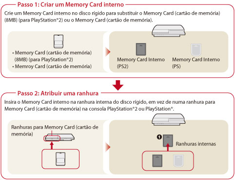

Jogo > Jogar software de formato PlayStation®2 / PlayStation® > Utilizar dados guardados
Utilizar dados guardados
Os dados guardados para o software de formato PlayStation®2 ou PlayStation® são guardados em memory cards internos criados dentro do disco rígido. Os memory cards internos podem ser usados, atribuindo-lhes ranhuras depois de terem sido criadas. Os dados apresentados em  (Utilitário do Memory Card (PS / PS2)).
(Utilitário do Memory Card (PS / PS2)).
Atenção
- Algum software do formato PlayStation®2 ou PlayStation® poderá ter um comportamento no sistema PS3™ diferente que nos sistemas PlayStation®2 ou PlayStation® ou pode não funcionar correctamente no sistema PS3™.
- Além disso, alguns sistemas PS3™ não reproduzem software de formato PlayStation®2. Para obter mais informações, consulte [Tipos de discos reproduzíveis], visite o Web site da SCE da sua região ou consulte a documentação incluída no seu sistema PS3™.

Criar um memory card interno
1. |
Seleccione |
|---|---|
2. |
Seleccione |
 (Jogo) no menu inicial.
(Jogo) no menu inicial. (Criar Novo Memory Card Interno).
(Criar Novo Memory Card Interno).Nota
Os nomes ou ícones do memory card interno podem ser alterados em [Informação] no menu das opções.
Atribuir uma ranhura
1. |
Seleccione |
|---|---|
2. |
Seleccione o memory card interno que quer utilizar e, em seguida prima o botão |
3. |
Seleccione [Atribuir Ranhuras]. |
 .
.Notas
- Dependendo do software, as ranhuras podem ser pré-atribuídas. Para mais detalhes, consulte as instruções fornecidas com o software.
- Pode atribuir ranhuras durante um jogo. Prima o botão PS no comando sem fios e, em seguida, seleccione [Atribuir ranhuras] no ecrã apresentado.